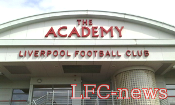
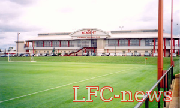

История академии
Академия - это так называемая "школа" футбольного клуба "Ливерпуль", предназначенная для развития молодых футболистов в профессиональных игроков. Основная целью выпускников Академии - это переход в первую команду "Ливерпуля".
Основное задание академии это, развитие местных талантов из самого Ливерпуля и его пригородов, но, сейчас все больше молодых игроков приезжает из других частей Англии и даже мира, и на молодых игроков тратятся не малые деньги.
Все ученики Академии разделены на группы по возрастному принципу.
Работа с игроками до 18 лет разделена на три стадии.
- Ученики первого года (до 17 лет)
- Ученики второго года (от 17 до 18)
- Ученики третьего года (18-19 лет)
После 19 лет игрока либо отпускают из клуба, либо он переходит в резервную команду (U21). Многие игроки выступают за U21 еще до того, как пройдут все уровни подготовки в Академии.
Скауты Академии посещают большое число местных юношеских команд, отыскивая талантливых ребят. Если скаута впечатлит кто-то из молодых футболистов, он может быть приглашен тренироваться в Академию.
Каждая возрастная группа включает в себя до двадцати футболистов, общее количество таких групп доходит до восемнадцати.
Мальчики от 8 до 12 лет, играют командам по восемь человек, игра длится три тайма по двадцать минут.
История Академии
До 1998 года Академия "Ливерпуля" была неформальной системой с плохо организованной структурой.
Но 1998 году в Киркби, северный Ливерпуль, открылся современный комплекс для молодых футболистов, возглавил который бывший игрок "Ливерпуля" Стив Хайвей. Развитие Киркби позволило клубу обратить больше внимания на программы для работы с молодыми ребятами, кроме того, Мелвуд теперь оказался в полном распоряжении первой команды.
Были построены четыре игровых поля для Академии (одно с синтетическим покрытием).
Внутри спортивного комплекса находятся еще семь небольших площадок для игры.
В Академии расположен лекционный зал и компьютерный класс (кто не закончил школу)
Площадь самого комплекса составляет 56 акров (≃230 000 кв м).
Внутри здания на стенах развешаны таблички со словам:
- "Техника"
- "Позиция"
- "Баланс"
- "Скорость"
Несмотря на все инновации со времен дебюта Джеррарда в 1998 году, но по-настоящему видных, или стоющих игроков Академия не выпускала.
Поэтому в середине 2000-х, Рафа Бенитес собственноручно взялся за реорганизацию Академии.
Первым делом Бенитес пригласил двух испанских тренеров из молодёжной системы Барселоны, Хосе Сегуру и Родолфо Боррелла.
Начались массовые поиски талантливых молодых игроков в Академиях других клубов.
Команда U18 принимает участие в молодежном чемпионате Англии и в молодежном Кубке Англии. Команды разных возрастов, не раз становились победителями турниров и чемпионатов.
Известные выпускники академии:
- Дэвид Томпсон
- Джейми Каррагер
- Майкл Оуэн
- Доминик Маттео
- Стив Макманаман
- Робби Фаулер
- Стивен Джеррард
- Стивен Уорнок
- Джей Спиринг
- Айби
- Стерлинг
- Алекс Качаниклич
- Том Инс
- Мартин Келли
- Джон Флэнаган и много других игроков.